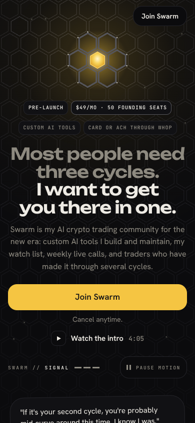
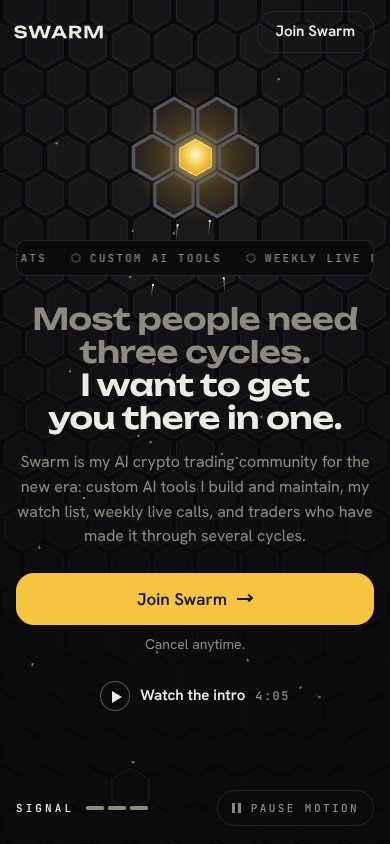
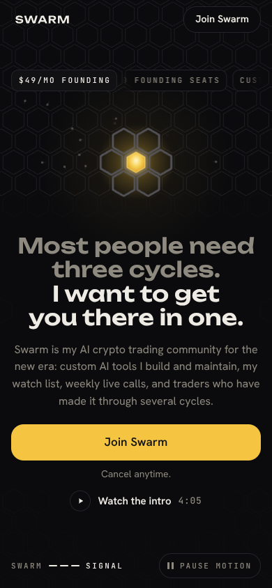

Launch page · joinswarm.ai
Three ways to launch Swarm.Pick the one that feels like you.
All three follow the flow of the page you sent (joinasymmetric.xyz), built inside your Swarm brand kit, with your own words from the launch video. They differ in the hero motion and the treatment. Open each full page on your phone and scroll it top to bottom, then reply with A, B or C, or a mix like “A’s hero with C’s founder section”.
Status
First look, after round 1: each direction was built, reviewed blind from screenshots by a separate agent, and fixed once. The scores below are from that first review, before its fixes. The polish rounds are running now: a much bigger, more dramatic hero motion on all three, every quote word for word from your launch video, and sharper product mocks. This page updates in place as they finish.
Direction A · Core Glow
Agents converge on one gold cell above your headline.
Closest to the page you sent. Agents scan the honeycomb, agree, and stream into a single gold cell above the headline; its glow is the light from above. The curve section shows the crowd under the curve: left curve herds, mid curve twitches, right curve holds.

Watch the scroll-through (28 seconds)
Blind review, round 1 (out of 10)
- Reference fit 6.5
- Agentic feel 6
- Premium 6.5
- Clarity 6
- Kit 7
- Phone 7
- Hero motion is too small: it lives in a thin band above the headline. Round 2 makes the swarm fill the first screen and the core much bigger.
- The Swarm logo is missing from the nav at the top; the left quote card uses a line the fact-check flagged. Both are being fixed.
Direction B · Landing
A 3D drone shot lands on the lit core as the logo appears.
Cinematic. The camera skims low over a field of hex cells, cranes up and lands top-down on the one lit cell while agents converge on it. A second 3D moment in “Why this cycle” carries the crowd from games to AI.

Watch the scroll-through (28 seconds)
Blind review, round 1 (out of 10)
- Reference fit 6
- Agentic feel 6
- Premium 5
- Clarity 6
- Kit 5
- Phone 7
- The first build used a heavy 3D copy of the logo; the fix replaced it with the official mark on the kit’s honeycomb field.
- The field and agents are still squeezed above the headline. Round 2 opens the drone shot up to the whole first screen.
Direction C · Three Cycles
Your three cycles, 2021, 2023 and now, collapse into one view.
Founder-led. Three honeycomb planes labelled 2021, 2023 and NOW hang in depth; a dolly zoom locks them into one field as the core lights. It is the promise made visual: “I want to get you there in one.”

Watch the scroll-through (28 seconds)
Blind review, round 1 (out of 10)
- Reference fit 6
- Agentic feel 6
- Premium 5.5
- Clarity 6
- Kit 7.5
- Phone 7
- The most dramatic resting frame, but the motion crosses the top headline mid-animation and the split headline leaves a gap early on. Both are round 2 fixes.
- The founder section is the strongest of the three: real portrait, word-for-word transcript card from the launch video.
Before launch
What I still need from you
- Your three Whop plan IDs (Founding $49, Standard $99, Yearly $990). The checkout spot is ready for them.
- The day and time of the weekly live call. Shown on the live-calls card and in the FAQ.
- Where Swarm lives once someone joins (Whop, Discord or something else). Used in “How joining works” and the FAQ.
- Confirm the AI tools don’t place trades for members. The FAQ answers “Will the AI trade for me?”
- What happens to the $49 founding price if a founder cancels and rejoins. The FAQ answers “What does $49 forever mean?”
- Your refund policy, Terms and Privacy links, and the legal name to show. Whop also shows these under the pay button.
- Approve the risk and disclaimer wording. Plain-English drafts are on every page; I’d have a lawyer look before launch.
Previews only. Nothing here is live on joinswarm.ai yet; the chosen direction goes into the real site after you pick it. The full pages open YouTube in a new tab and show a placeholder where the Whop checkout will load.